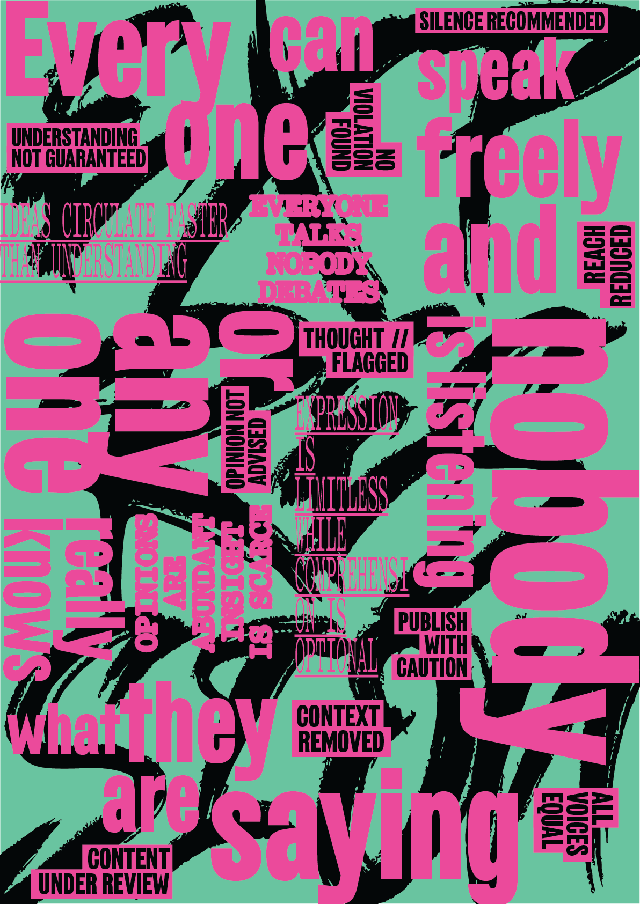
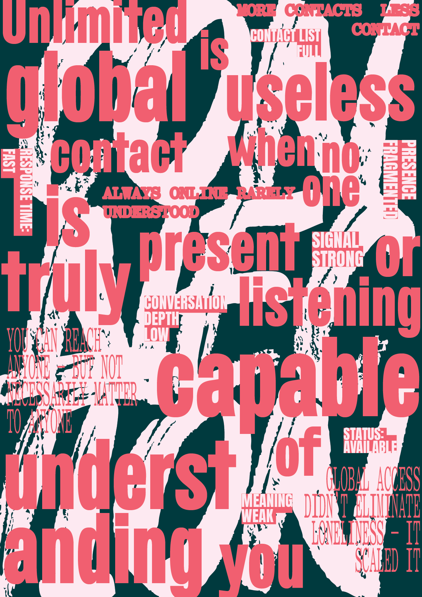

PROPAGANDA
PROPAGANDA
Značenje se ne otkriva. Ono se konstruiše.
Ova serija istražuje kako se percepcija oblikuje kroz strukturu, ponavljanje i kontrolisani kontekst. Jezik nije neutralan — on organizuje pažnju, definiše granice i usmerava interpretaciju.
Tekst je tretiran kao prostorni materijal. Formira sisteme koji deluju otvoreno, ali funkcionišu unutar fiksnih ograničenja. Ono što je vidljivo deluje dostupno. Ono što se ponavlja deluje istinito.
Ovi radovi ne prenose poruke.
Oni otkrivaju mehanizme koji poruke čine efikasnim.
Meaning is not discovered. It is constructed.
This series examines how perception is shaped through structure, repetition, and controlled context. Language is not neutral—it organizes attention, defines boundaries, and directs interpretation.
Text is treated as spatial material. It forms systems that appear open, but operate within fixed limits. What is visible feels available. What is repeated feels true.
These works do not present messages.
They reveal the mechanisms that make messages effective.


STANJA SISTEMA
SYSTEM STATES
Serija tipografskih postera koja istražuje kako savremeni sistemi oblikuju ponašanje, percepciju i značenje.
Svaki rad izdvaja jedno stanje — kontrolu, vidljivost, šum, sigurnost, svrhu — i prevodi ga u strukturisan vizuelni jezik.
Fragmenti tehničke sintakse, narušena hijerarhija i kondenzovane poruke odražavaju okruženja u kojima je komunikacija stalna, ali je jasnoća nestabilna.
Posteri ne nude zaključke.
Oni dokumentuju obrasce.
A series of typographic posters exploring how contemporary systems shape behavior, perception, and meaning.
Each work isolates a condition — control, visibility, noise, safety, purpose — and translates it into a structured visual language.
Fragments of technical syntax, distorted hierarchy, and compressed statements reflect environments where communication is constant, but clarity is unstable.
The posters do not offer conclusions.
They document patterns.







PROTOKOL NORMALIZACIJE
NORMALIZATION PROTOCOL
Sistem ne zahteva saglasnost. On zahteva ponavljanje.
Ova serija posmatra kontrolu kao kontinuirani proces, a ne kao izuzetak. Izjave nisu ekspresivne — one su deklarativne, gotovo administrativne, i opisuju mehanizme koji funkcionišu bez prekida i bez vidljivog centra.
Informacije se raspoređuju, preklapaju i gube jasnoću. Značenje ostaje prisutno, ali nije neposredno dostupno. Ono se ne skriva — ono se rastvara u strukturi.
Manipulacija postaje neprimetna. Nasilje postaje normalizovano. Predikcija zamenjuje izbor. Greška postaje očekivana.
Ovi radovi ne nude objašnjenje.
Oni registruju stanje u kome je kontrola ugrađena, kontinuirana i uglavnom neprepoznata.
The system does not require consent. It requires repetition.
This series examines control as a continuous condition rather than an exception. The statements are not expressive—they are declarative, almost administrative, describing mechanisms that operate without interruption and without a visible center.
Information is distributed, overlapped, and stripped of clarity. Meaning remains present but not immediately accessible. It is not hidden—it dissolves into the structure.
Manipulation becomes unnoticeable. Violence becomes normalized. Prediction replaces choice. Failure becomes expected.
These works do not offer explanation.
They register a condition in which control is embedded, continuous, and largely unrecognized.


KONTROLA BEZ STRUKTURE
CONTROL WITHOUT STRUCTURE
Sistem ne prestaje da funkcioniše. On prestaje da se menja.
Ova serija istražuje stanje u kome se struktura postepeno raspada, dok kontrola ostaje netaknuta. Odnosi slabe, oslonci nestaju, ali forma opstaje. Ono što je vidljivo deluje stabilno, iako se osnova kontinuirano gubi.
Procesi se ponavljaju bez posledice. Signali se održavaju bez potrebe. Rezultati ostaju isti bez obzira na ulaz. Promena se ne prekida — ona se apsorbuje.
Ovi radovi ne prikazuju kolaps.
Oni prikazuju sistem koji ga ne registruje.
The system does not stop functioning. It stops changing.
This series explores a condition where structure gradually collapses while control remains intact. Relations weaken, supports disappear, yet form persists. What is visible appears stable, even as its foundation is continuously lost.
Processes repeat without consequence. Signals persist without necessity. Results remain unchanged regardless of input. Change is not interrupted—it is absorbed.
These works do not depict collapse.
They depict a system that does not register it.